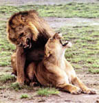

Os leões, tal como outros felinos, podem-se reproduzir varias vezes por ano. Contudo, a leoa só vai acasalar de novo quando os seus filhos tiverem 2 anos ou se toda a ninhada morrer. O período de gestação dura entre 110 a 119 dias e cada ninhada costuma ter 3 a 6 crias. Após nascerem, a mãe e os filhos ficam isolados do grupo durante mais ou menos 5 semanas. Quando nascem, as crias pesam entre 800 gramas e 1300 gramas. Mamam ate aos 6 meses mas começam a comer carne a partir dos 3 meses de idade. Começam a caçar aos 11 meses mas apenas podem caçar sozinhos a partir dos 30 meses. Normalemnte apenas 50% da ninhada costuma sobreviver.
